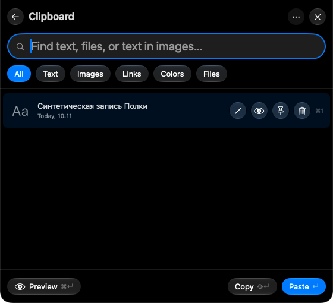
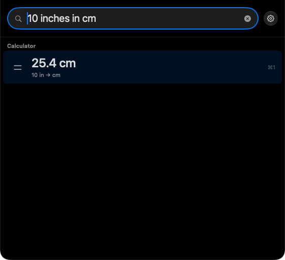
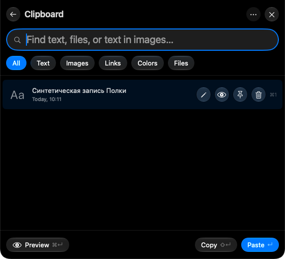
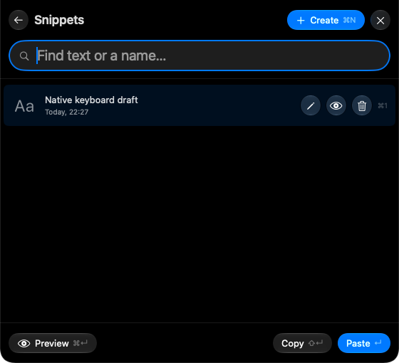
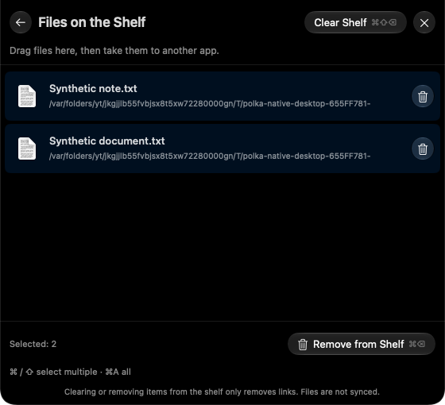
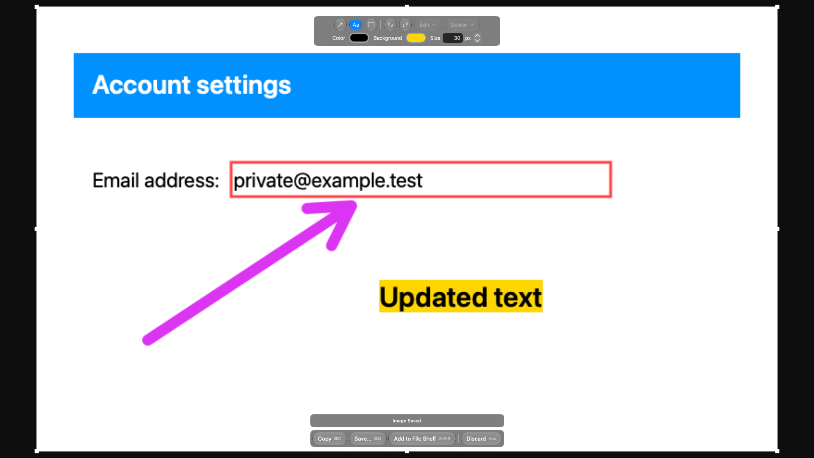
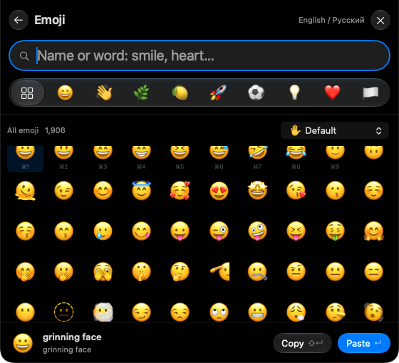

Free & open source macOS 27 or later · Apple silicon

The open shelf sits flush with the top edge, covering the notch.
What goes on the shelf.
A few things you do many times a day.
Smart input and search
One field to launch apps, search your clipboard and snippets, or get a quick answer. Search by name or initials, even with a typo or the wrong keyboard layout. Type a calculation, a measurement, or a time conversion to see the result.
10 inches in cm→25.4 cm

Clipboard History
Find text, images, and files you’ve copied, preview an entry, and paste it back into your work. Pin the things you want to keep. Search inside copied images with local text recognition. Linked Macs download regular files only when you copy or paste them; groups up to 32 MB are supported, and the source must be online for the first download.
Open clipboard history with ⌘ ⇧ V

Snippets
Keep addresses, standard replies, and other text you use often. Give a snippet a title, find it by title or content, and paste it when you need it.

Files on the Shelf
Drag a file or folder to the top of your screen, then pick it up in another app. Select several to move them together. The shelf holds references; your original files stay where they are.
Files stay on the shelf until you quit Polka.

Screenshots
Capture a region of your screen and mark it up with arrows, text, and rectangles. Copy the result, save a PNG, or add it to the file shelf to drag into another app. Use ⌃⌘⇧⌥4 to select and copy a region immediately without opening the editor.

Emoji
Find emoji by name or keyword, browse categories, and choose a skin tone. Copy or paste your selection straight from the keyboard.

System Status
Check battery charge, memory pressure, storage space, and network traffic. Meters and small charts show what’s happening while you work.
The script downloads the latest stable release, checks its checksum and signature, installs Polka in Applications, and opens it. It asks for your Mac password if needed.